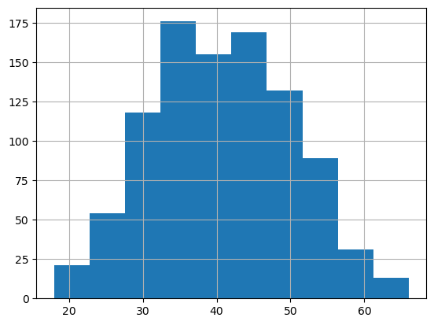
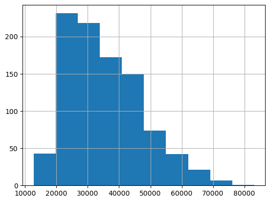
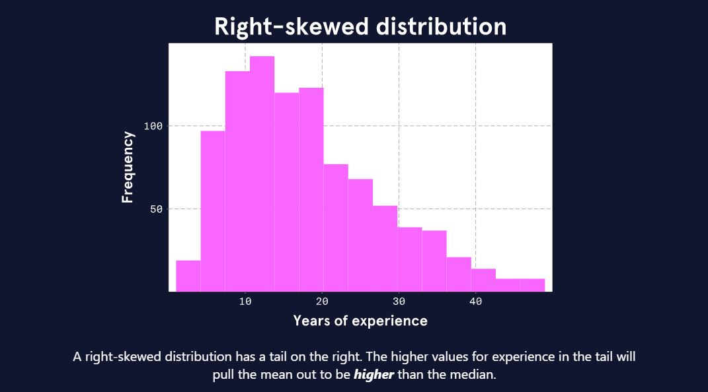
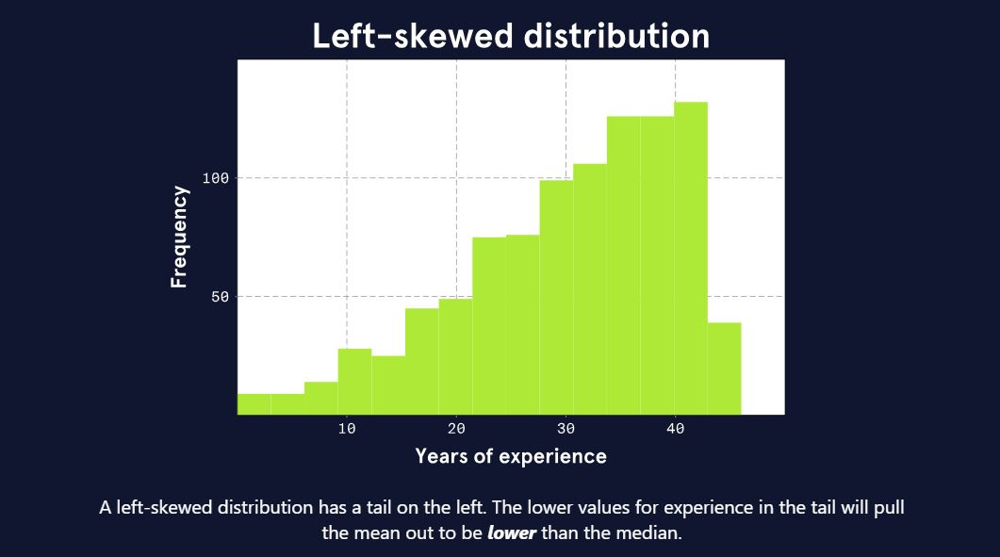
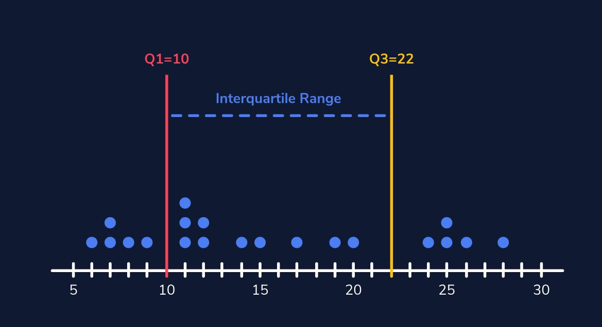
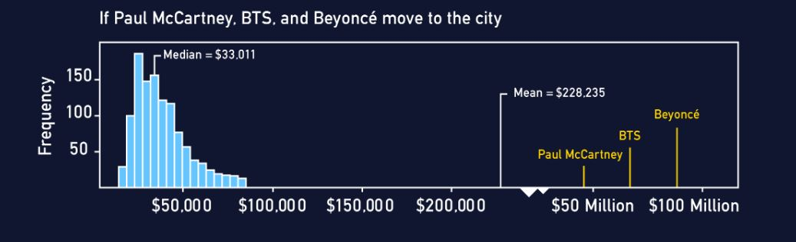
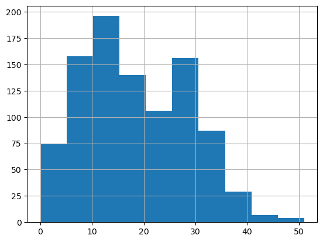
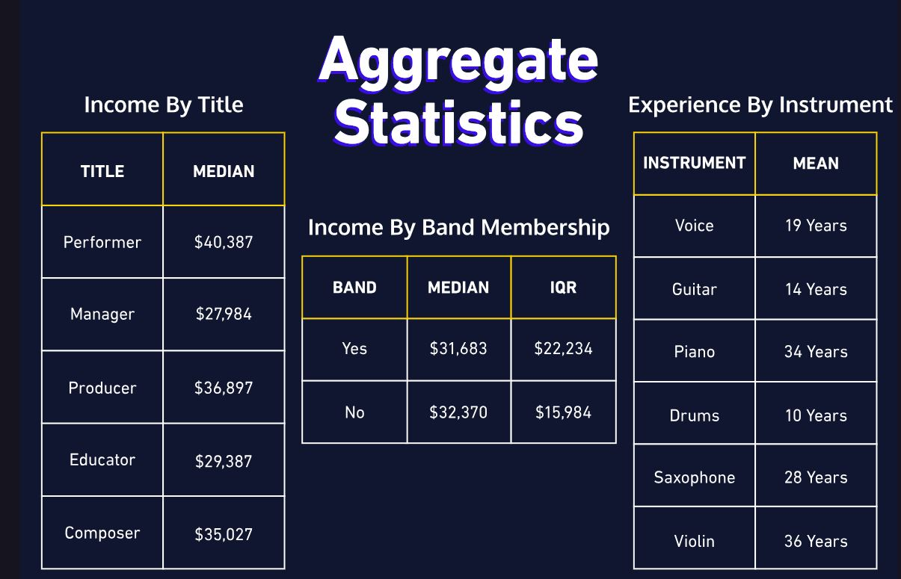
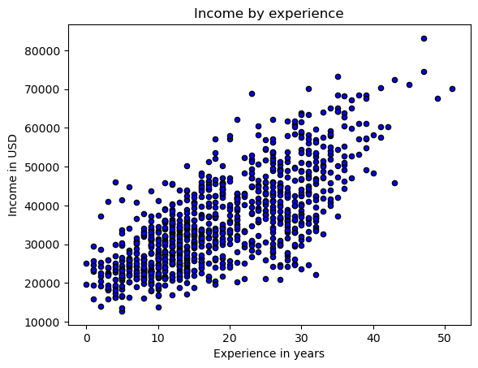

import pandas as pdIntroduction
Let’s imagine we are working for the city government of the fictional city of Melody Metropolis. The mayor of Melody Metropolis wants to know more about the musicians who currently live in the city. The learning environment shows a dataset we have on musicians living in the city as of last year. How would you describe this dataset? See if you can answer any of the following questions:
- What does a typical musician’s income look like?
- Is there a wide range of musician ages?
- What proportion of the musicians in the dataset play guitar?
We can try to make generalizations by looking over the rows and columns, but it’s difficult to answer these questions precisely. We need some kind of “data vocabulary” that can help us measure and describe the variables in the dataset. Summary statistics can be used for exactly this purpose!
With a basic understanding of summary statistics, we can communicate and understand a lot more specific information about the musicians in the city. But learning statistics is often associated with a lot of negativity:
- Memorization of lots of math formulas
- Long calculations done by hand
- Confusing or meaningless interpretations
None of these struggles need to be part of learning to use statistics. In this lesson, we’ll gain a conceptual understanding of how summary statistics can easily help us communicate and interpret our dataset.
musician = pd.read_csv('data/music.csv')musician.info()<class 'pandas.core.frame.DataFrame'>
RangeIndex: 958 entries, 0 to 957
Data columns (total 6 columns):
# Column Non-Null Count Dtype
--- ------ -------------- -----
0 age 958 non-null int64
1 income 958 non-null int64
2 title 958 non-null object
3 experience 958 non-null int64
4 instrument 958 non-null object
5 band 958 non-null int64
dtypes: int64(4), object(2)
memory usage: 45.0+ KBmusician.head()| age | income | title | experience | instrument | band | |
|---|---|---|---|---|---|---|
| 0 | 40 | 40840 | performer | 13 | guitar | 1 |
| 1 | 54 | 21689 | composer | 11 | voice | 1 |
| 2 | 37 | 43153 | composer | 28 | piano | 0 |
| 3 | 47 | 58113 | composer | 31 | violin | 0 |
| 4 | 52 | 24518 | producer | 13 | guitar | 1 |
Describing Categorical Variables
To start our summary for the mayor, let’s describe some of the categorical variables in the musician dataset — those variables that contain qualitative information on the city’s musicians. First, let’s look at information about the title variable, which tells us the job title each musician holds.
The following table shows:
- frequency: the count of musicians for each job title
- proportion: the frequency divided by the total number of musicians
- percentage: the proportion converted from a decimal to a percentage
musician.astype('object').describe()| age | income | title | experience | instrument | band | |
|---|---|---|---|---|---|---|
| count | 958 | 958 | 958 | 958 | 958 | 958 |
| unique | 48 | 947 | 5 | 48 | 6 | 2 |
| top | 39 | 35558 | performer | 14 | guitar | 1 |
| freq | 46 | 2 | 333 | 46 | 278 | 619 |
Describing Numeric Variables
Now that we’ve learned about some of the categorical variables in our musician dataset, it’s time to explore some numeric variables — those with quantitative data. There are a lot of ways we can describe the distribution of a numeric variable. A distribution is a function that shows all possible values of a variable and how frequently each value occurs. This may sound pretty technical, but visualizing the distribution can make it easy to understand.
musician.age.hist()<AxesSubplot: >
The distribution of musician ages is plotted with age on the x-axis and frequency on the y-axis. From this plot, we can see:
- Ages range from about 15 to 70
- There are few musicians under 30 or over 50 years old
- There are a lot of musicians between the ages of 30 and 50
This distribution might be considered bell-shaped or hill-shaped and symmetrical. This is actually a very common pattern and is called a normal distribution.
Viewing a plot or knowing a variable is normally distributed gives us some general information, but still nothing specific. We need exact measurements to describe where the center of the distribution is and how wide the values are spread away from that center. There are several sets of statistics we may use for these measurements, and we will need to know when to use which combination.
musician.describe()| age | income | experience | band | |
|---|---|---|---|---|
| count | 958.000000 | 958.000000 | 958.000000 | 958.000000 |
| mean | 40.588727 | 35546.394572 | 18.575157 | 0.646138 |
| std | 9.324632 | 11956.462117 | 9.814587 | 0.478417 |
| min | 18.000000 | 12728.000000 | 0.000000 | 0.000000 |
| 25% | 34.000000 | 25942.500000 | 11.000000 | 0.000000 |
| 50% | 40.000000 | 33568.000000 | 17.000000 | 1.000000 |
| 75% | 47.000000 | 43084.250000 | 27.000000 | 1.000000 |
| max | 66.000000 | 83158.000000 | 51.000000 | 1.000000 |
Mean and Standard Deviation
Let’s return to our visualization of the distribution of musician ages.
- What would you say is the typical age of a musician in Melody Metropolis?
- Are most musicians about this age, or are there lots of musicians of many different ages?
To answer these questions more specifically, we should take some measurements of our variable.
The mean, also called the average, describes the center of a numeric distribution by adding all values and dividing by the count.
The standard deviation describes the spread of values in a numeric distribution relative to the mean. It is calculated by finding the average squared distance from each data point to the mean and square-rooting the result.
The mean age of musicians is 40.6 years and the standard deviation is about 9.3 years. We might interpret this standard deviation as moderate variability in age. Had the standard deviation been 1 year, we might say there’s hardly any variability in age.
The mean and standard deviation are common choices, especially for normal distributions. Their mathematical formulas have special properties that make them easy to use in other contexts, such as statistical testing. However, the mean and standard deviation are not always the best measurements to describe a distribution.
Skewed Distributions
As we’re moving through the numeric variables in our musician dataset, we come across some interesting details when we inspect the income variable.
musician.income.hist()<AxesSubplot: >
We notice that the shape of the distribution is different than the shape of the age distribution. There are quite a few musicians with higher incomes that are creating a longer tail on the right side. We also notice that the mean indicates that the typical income is 35,546. This value seems a little high since most of the incomes seem to be between 15,000 and 40,000.
What we have learned is that the income distribution is skewed. A skewed distribution is asymmetrical with a steep change in frequency on one side and a flatter, trailing change in frequency on the other. Specifically, the income distribution is right-skewed (also called positively-skewed) because the tail is on the right side.
So why does the mean seem wrong? Remember, the mean is the sum of all the values in the dataset divided by the total count. That sum is made very large by all the higher incomes in that right tail. This makes the mean a greater number than we would like it be. When the data are skewed, the mean may not be the best measure of a typical observation.
There are a number of ways to deal with this issue. We will handle the problem with the income data by taking some alternative measurements.
Another numeric variable from the musician dataset is years of experience working in the field of music. This plot shows what the experience distribution might look like if it is right-skewed like the income distribution is.

This plot shows what the experience distribution might look like if it is left-skewed.

Think about which distribution seems most likely to be true for musicians in Melody Metropolis.
Median and IQR
Let’s find an alternative measure to the mean. We want to find a value that represents the typical musician income, but we don’t want to use the actual values in the computation because the data are skewed.
One method would be to find the middle value when all values are arranged from smallest to largest. This value is called the median, but it’s also referred to as the 50th percentile or the second quartile (Q2).
Let’s look at some simple data where the median (Q2) is 13. Half the data points are less than 13, and half are greater than 13.
These data span 22 values, ranging from 6 to 28. We could use this as our measure of spread, but what if the highest number wasn’t 28 but 280? The median would still be 13, but now the range is 274 (280-6), which doesn’t tell us a lot about the bulk of the data.
A better measurement might be the interquartile range (IQR). A quartile is simply a marker for a quarter (25%) of the data.

- The first quartile marks 25% (Q1 = 10).
- The second quartile marks 50% (Q2 = 13 — the median)
- The third quartile marks 75% (Q3 = 22)
The IQR is the difference between Q3 and Q1 (22-10 = 12), marking the range for just the middle 50% of the data.
Let’s find out how the median and IQR work out for our income data.
This looks better — the median of 33,568 is lower than the mean of 35,546 and seems more typical.
Outliers and Robust Measures
For our income data, the difference between the mean (35,546) and median (33,568) was only about 2,000. You may be wondering: Is the difference ever larger?
Let’s imagine some very famous celebrity musicians have all decided to move to Melody Metropolis. We know celebrities make much more money than the typical musician in our dataset. Say we added three new incomes to the distribution:
$48 million:Paul McCartney, British musician of the Beatles$57 million:BTS, South Korean K-pop band$81 million:Beyoncé, American singer-songwriter

The median appears almost unaffected by the addition of these three gigantic incomes: the median moves from 32,978 to 33,011. However, the mean makes a drastic change from 34,795 to 228,235. The mean is now well beyond even the maximum in the original distribution. An income of 228,235 is definitely not a great measure of the center of our income distribution.
These celebrity incomes are examples of outliers, extreme values that are distant from the rest of the distribution. Just as with skewness, outliers tend to more heavily influence the mean than the median. This same pattern occurs with measures of spread: the standard deviation is more influenced by outliers and skewness than the interquartile range (IQR).
Because the median and IQR are NOT heavily influenced by extreme values, we say they are robust. Robust statistics are often a better choice to measure the center and spread of a distribution that is skewed or has outliers.
Aggregate Data
One measure that we haven’t covered that is usually talked about alongside the mean and median is the mode. The mode is defined as the value with the highest frequency, but we can also think of the mode as the value where the peak of the distribution occurs. While not great for computations, the mode can help us identify interesting features in a variable.
For instance, there might be more than one mode, such as in our distribution of years of experience. In the following plot, we can see there’s one peak near the 10-year mark and another near the 30-year mark. We would call this distribution bimodal because it has two modes.
musician.experience.hist()<AxesSubplot: >
Sometimes bimodal distributions occur when there are differences across categories of another variable. Given that the city seems to have a lot of young people in bands, let’s see if this pattern is reflected when we find the mean of each category of the band variable.

These means are very different and very close to the locations of the modes in our plot. This indicates that there may be some differences in experience level between these two groups that are showing up in our distribution plots as two peaks.
By making this separation and then summarizing with the mean, we have aggregated our data. In this case, we have aggregated by summarizing a numeric variable (experience) across each value of a categorical variable (band).
Do you see any other interesting patterns?
Variable Relationships
Aggregating data is a way of exploring variable relationships. We specifically looked at relationships between a numeric variable and a categorical variable, but we should also examine relationships between two numeric variables.
For example, we might wonder: Does musician income vary with years of experience? To start, we can take a look at a scatter plot with experience on the x-axis and income on the y-axis. Each point in the plot represents a musician, and the coordinates of that point are the musician’s experience (x) and income (y).
import matplotlib.pyplot as plt
# Scatter plot
musician.plot.scatter(x='experience', y='income', c='blue', marker='o', edgecolors='black')
# Set plot labels and title
plt.title('Income by experience')
plt.xlabel('Experience in years')
plt.ylabel('Income in USD')
# Show the plot
plt.show()
The cloud of points in the plot has a pattern. The points move from the lower left to the upper right part of the plot. In other words, lower levels of experience tend to be associated with lower incomes, and higher levels of experience tend to be associated with higher incomes. The points don’t form a perfect line though — there is some variation.
We can describe this relationship more precisely by measuring the correlation coefficient. This number ranges from -1 to +1 and tells us two things about a linear relationship:
Direction:A positive coefficient means that higher values in one variable are associated with higher values in the other. A negative coefficient means higher values in one variable are associated with lower values of the other.Strength:The farther the coefficient is from 0, the stronger the relationship and the more the points in a scatter plot look like a line.
correlation_matrix = musician.corr()
correlation_matrix/tmp/ipykernel_249/863198317.py:1: FutureWarning: The default value of numeric_only in DataFrame.corr is deprecated. In a future version, it will default to False. Select only valid columns or specify the value of numeric_only to silence this warning.
correlation_matrix = musician.corr()| age | income | experience | band | |
|---|---|---|---|---|
| age | 1.000000 | 0.012138 | 0.030573 | -0.014856 |
| income | 0.012138 | 1.000000 | 0.736082 | -0.370822 |
| experience | 0.030573 | 0.736082 | 1.000000 | -0.574383 |
| band | -0.014856 | -0.370822 | -0.574383 | 1.000000 |
The correlation coefficient for income and experience is 0.74 — the relationship is positive and moderately strong.